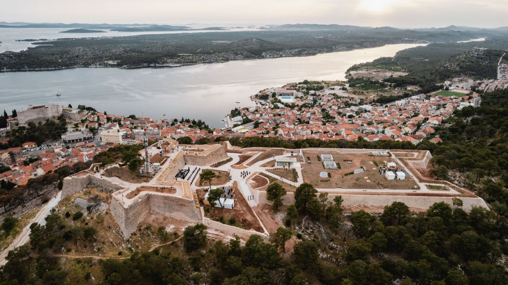

1 / 4

Sv. Mihovil
2 / 4

Barone
3 / 4

Sv. Ivan
4 / 4
Sv. Nikola
Tvrđava sv. Ivana najveća je od tri šibenske tvrđave i zadnja obnovljena. Sagrađena je 1646. godine i to u svega 58 dana kao glavna točka novog obrambenog sustava grada neposredno pred veliki napad osmanske vojske. Tvrđavu su svojim rukama i sredstvima podigli Šibenčani, a nazvana je prema crkvici koja se tamo nekada nalazila.
Obnova tvrđave završena je 2022. godine kada su kompletno su obnovljeni bedemi tvrđave te uvedeni novi sadržaji od kojih je posebno atraktivan suvremeno opremljen podzemni kampus. Na Tvrđavi sv. Ivana tijekom ljetnih mjeseci možete uživati u osvježenju u baru koji se nalazi na vrhu poznatom kao „zvijezda“ tvrđave, a uz bar se nalazi i suvenirnica smještena u nekadašnjoj barutani. Predlažemo da na Tvrđavu dođete tijekom "zlatnog sata" i svjedočite očaravajućem zalasku sunca s najviše šibenske tvrđave, s pogledom na grad, more i otoke.